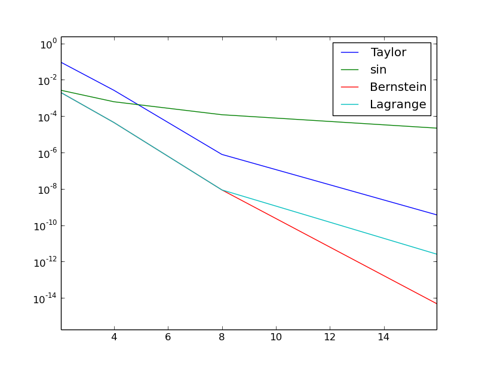
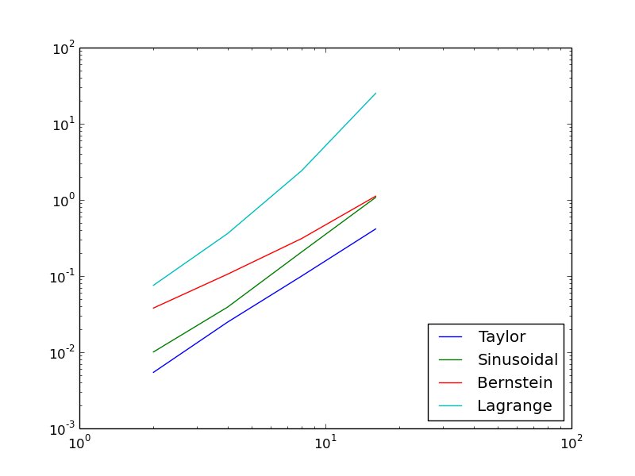

Interpolation
The interpolation (or collocation) principle
The principle of minimizing the distance between \( u \) and \( f \) is an intuitive way of computing a best approximation \( u\in V \) to \( f \). However, there are other approaches as well. One is to demand that \( u(\xno{i}) = f(\xno{i}) \) at some selected points \( \xno{i} \), \( i\in\If \): $$ \begin{equation} u(\xno{i}) = \sum_{j\in\If} c_j \baspsi_j(\xno{i}) = f(\xno{i}), \quad i\in\If\tp \tag{2.52} \end{equation} $$ We recognize that the equation \( \sum_j c_j \baspsi_j(\xno{i}) = f(\xno{i}) \) is actually a linear system with \( N+1 \) unknown coefficients \( \sequencej{c} \): $$ \begin{equation} \sum_{j\in\If} A_{i,j}c_j = b_i,\quad i\in\If, \tag{2.53} \end{equation} $$ with coefficient matrix and right-hand side vector given by $$ \begin{align} A_{i,j} &= \baspsi_j(\xno{i}), \tag{2.54}\\ b_i &= f(\xno{i})\tp \tag{2.55} \end{align} $$ This time the coefficient matrix is not symmetric because \( \baspsi_j(\xno{i})\neq \baspsi_i(\xno{j}) \) in general. The method is often referred to as an interpolation method since some point values of \( f \) are given (\( f(\xno{i}) \)) and we fit a continuous function \( u \) that goes through the \( f(\xno{i}) \) points. In this case the \( \xno{i} \) points are called interpolation points. When the same approach is used to approximate differential equations, one usually applies the name collocation method and \( \xno{i} \) are known as collocation points.
Given \( f \) as a sympy symbolic expression f, \( \sequencei{\baspsi} \)
as a list psi, and a set of points \( \sequencei{x} \) as a list or array
points, the following Python function sets up and solves the matrix system
for the coefficients \( \sequencei{c} \):
def interpolation(f, psi, points):
N = len(psi) - 1
A = sym.zeros(N+1, N+1)
b = sym.zeros(N+1, 1)
psi_sym = psi # save symbolic expression
x = sym.Symbol('x')
psi = [sym.lambdify([x], psi[i], 'mpmath') for i in range(N+1)]
f = sym.lambdify([x], f, 'mpmath')
for i in range(N+1):
for j in range(N+1):
A[i,j] = psi[j](points[i])
b[i,0] = f(points[i])
c = A.LUsolve(b)
# c is a sympy Matrix object, turn to list
c = [sym.simplify(c[i,0]) for i in range(c.shape[0])]
u = sym.simplify(sum(c[i]*psi_sym[i] for i in range(N+1)))
return u, c
The interpolation function is a part of the approx1D
module.
We found it convenient in the above function to turn the expressions f and
psi into ordinary Python functions of x, which can be called with
float values in the list points when building the matrix and
the right-hand side. The alternative is to use the subs method
to substitute the x variable in an expression by an element from
the points list. The following session illustrates both approaches
in a simple setting:
>>> import sympy as sym
>>> x = sym.Symbol('x')
>>> e = x**2 # symbolic expression involving x
>>> p = 0.5 # a value of x
>>> v = e.subs(x, p) # evaluate e for x=p
>>> v
0.250000000000000
>>> type(v)
sympy.core.numbers.Float
>>> e = lambdify([x], e) # make Python function of e
>>> type(e)
>>> function
>>> v = e(p) # evaluate e(x) for x=p
>>> v
0.25
>>> type(v)
float
A nice feature of the interpolation or collocation method is that it avoids computing integrals. However, one has to decide on the location of the \( \xno{i} \) points. A simple, yet common choice, is to distribute them uniformly throughout the unit interval.
Example
Let us illustrate the interpolation method by approximating our parabola \( f(x)=10(x-1)^2-1 \) by a linear function on \( \Omega=[1,2] \), using two collocation points \( x_0=1+1/3 \) and \( x_1=1+2/3 \):
import sympy as sym
x = sym.Symbol('x')
f = 10*(x-1)**2 - 1
psi = [1, x]
Omega = [1, 2]
points = [1 + sym.Rational(1,3), 1 + sym.Rational(2,3)]
u, c = interpolation(f, psi, points)
comparison_plot(f, u, Omega)
The resulting linear system becomes $$ \begin{equation*} \left(\begin{array}{ll} 1 & 4/3\\ 1 & 5/3\\ \end{array}\right) \left(\begin{array}{l} c_0\\ c_1\\ \end{array}\right) = \left(\begin{array}{l} 1/9\\ 31/9\\ \end{array}\right) \end{equation*} $$ with solution \( c_0=-119/9 \) and \( c_1=10 \). Figure 10 (left) shows the resulting approximation \( u=-119/9 + 10x \). We can easily test other interpolation points, say \( x_0=1 \) and \( x_1=2 \). This changes the line quite significantly, see Figure 10 (right).
Figure 10: Approximation of a parabola by linear functions computed by two interpolation points: 4/3 and 5/3 (left) versus 1 and 2 (right).

Lagrange polynomials
In the section Fourier series we explained the advantage of having a diagonal matrix: formulas for the coefficients \( \sequencei{c} \) can then be derived by hand. For an interpolation (or collocation) method a diagonal matrix implies that \( \baspsi_j(\xno{i}) = 0 \) if \( i\neq j \). One set of basis functions \( \baspsi_i(x) \) with this property is the Lagrange interpolating polynomials, or just Lagrange polynomials. (Although the functions are named after Lagrange, they were first discovered by Waring in 1779, rediscovered by Euler in 1783, and published by Lagrange in 1795.) Lagrange polynomials are key building blocks in the finite element method, so familiarity with these polynomials will be required anyway.
A Lagrange polynomial can be written as $$ \begin{equation} \baspsi_i(x) = \prod_{j=0,j\neq i}^N \frac{x-\xno{j}}{\xno{i}-\xno{j}} = \frac{x-x_0}{\xno{i}-x_0}\cdots\frac{x-\xno{i-1}}{\xno{i}-\xno{i-1}}\frac{x-\xno{i+1}}{\xno{i}-\xno{i+1}} \cdots\frac{x-x_N}{\xno{i}-x_N}, \tag{2.56} \end{equation} $$ for \( i\in\If \). We see from (2.56) that all the \( \baspsi_i \) functions are polynomials of degree \( N \) which have the property $$ \begin{equation} \baspsi_i(x_s) = \delta_{is},\quad \delta_{is} = \left\lbrace\begin{array}{ll} 1, & i=s,\\ 0, & i\neq s, \end{array}\right. \tag{2.57} \end{equation} $$ when \( x_s \) is an interpolation (collocation) point. Here we have used the Kronecker delta symbol \( \delta_{is} \). This property implies that \( A \) is a diagonal matrix, i.e., \( A_{i,j}=0 \) for \( i\neq j \) and \( A_{i,j}=1 \) when \( i=j \). The solution of the linear system is then simply $$ \begin{equation} c_i = f(\xno{i}),\quad i\in\If, \tag{2.58} \end{equation} $$ and $$ \begin{equation} u(x) = \sum_{j\in\If} c_i \baspsi_i(x) = \sum_{j\in\If} f(\xno{i})\baspsi_i(x)\tp \tag{2.59} \end{equation} $$ We remark however that (2.57) does not necessarily imply that the matrix obtained by the least squares or project methods is diagonal.
The following function computes the Lagrange interpolating polynomial
\( \baspsi_i(x) \) on the unit interval (0,1), given the interpolation points \( \xno{0},\ldots,\xno{N} \) in
the list or array points:
def Lagrange_polynomial(x, i, points):
p = 1
for k in range(len(points)):
if k != i:
p *= (x - points[k])/(points[i] - points[k])
return p
The next function computes a complete basis, \( \baspsi_0,\ldots,\baspsi_N \), using equidistant points throughout \( \Omega \):
def Lagrange_polynomials_01(x, N):
if isinstance(x, sym.Symbol):
h = sym.Rational(1, N-1)
else:
h = 1.0/(N-1)
points = [i*h for i in range(N)]
psi = [Lagrange_polynomial(x, i, points) for i in range(N)]
return psi, points
When x is a sym.Symbol object, we let the spacing between the
interpolation points, h, be a sympy rational number, so that we
get nice end results in the formulas for \( \baspsi_i \). The other case,
when x is a plain Python float, signifies numerical computing, and
then we let h be a floating-point number. Observe that the
Lagrange_polynomial function works equally well in the symbolic and
numerical case - just think of x being a sym.Symbol object or a
Python float. A little interactive session illustrates the
difference between symbolic and numerical computing of the basis
functions and points:
>>> import sympy as sym
>>> x = sym.Symbol('x')
>>> psi, points = Lagrange_polynomials_01(x, N=2)
>>> points
[0, 1/2, 1]
>>> psi
[(1 - x)*(1 - 2*x), 2*x*(2 - 2*x), -x*(1 - 2*x)]
>>> x = 0.5 # numerical computing
>>> psi, points = Lagrange_polynomials_01(x, N=2)
>>> points
[0.0, 0.5, 1.0]
>>> psi
[-0.0, 1.0, 0.0]
That is, when used symbolically, the Lagrange_polynomials_01
function returns the symbolic expression for the Lagrange functions
while when x is a numerical valued the function returns the value of
the basis function evaluate in x. In the present example only the
second basis function should be 1 in the mid-point while the others
are zero according to (2.57).
Approximation of a polynomial
The Galerkin or least squares methods lead to an exact approximation if \( f \) lies in the space spanned by the basis functions. It could be of interest to see how the interpolation method with Lagrange polynomials as basis is able to approximate a polynomial, e.g., a parabola. Running
for N in 2, 4, 5, 6, 8, 10, 12:
f = x**2
psi, points = Lagrange_polynomials_01(x, N)
u = interpolation(f, psi, points)
shows the result that up to N=4 we achieve an exact approximation,
and then round-off errors start to grow, such that
N=15 leads to a 15-degree polynomial for \( u \) where
the coefficients in front of \( x^r \) for \( r>2 \) are
of size \( 10^{-5} \) and smaller. As the matrix is ill-conditioned
and we use floating-point arithmetic, we do not obtain the exact
solution. Still, we get a solution that is visually identical to the
exact solution. The reason is that the ill-conditioning causes
the system to have many solutions very close to the true solution.
While we are lucky for N=15 and obtain a solution that is
visually identical to the true solution, ill-conditioning may also
result in completely wrong results. As we continue with higher values, N=20 reveals that the
procedure is starting to fall apart as the approximate solution is around 0.9 at \( x=1.0 \),
where it should have
been \( 1.0 \). At N=30 the approximate solution is around \( 5\cdot10^8 \) at \( x=1 \).
Successful example
Trying out the Lagrange polynomial basis for approximating \( f(x)=\sin 2\pi x \) on \( \Omega =[0,1] \) with the least squares and the interpolation techniques can be done by
x = sym.Symbol('x')
f = sym.sin(2*sym.pi*x)
psi, points = Lagrange_polynomials_01(x, N)
Omega=[0, 1]
u, c = least_squares(f, psi, Omega)
comparison_plot(f, u, Omega)
u, c = interpolation(f, psi, points)
comparison_plot(f, u, Omega)
Figure 11 shows the results. There is a difference between the least squares and the interpolation technique but the difference decreases rapidly with increasing \( N \).
Figure 11: Approximation via least squares (left) and interpolation (right) of a sine function by Lagrange interpolating polynomials of degree 3.

Less successful example
The next example concerns interpolating \( f(x)=|1-2x| \) on \( \Omega =[0,1] \) using Lagrange polynomials. Figure 12 shows a peculiar effect: the approximation starts to oscillate more and more as \( N \) grows. This numerical artifact is not surprising when looking at the individual Lagrange polynomials. Figure 13 shows two such polynomials, \( \psi_2(x) \) and \( \psi_7(x) \), both of degree 11 and computed from uniformly spaced points \( \xno{i}=i/11 \), \( i=0,\ldots,11 \), marked with circles. We clearly see the property of Lagrange polynomials: \( \psi_2(\xno{i})=0 \) and \( \psi_7(\xno{i})=0 \) for all \( i \), except \( \psi_2(\xno{2})=1 \) and \( \psi_7(\xno{7})=1 \). The most striking feature, however, is the dominating oscillation near the boundary where \( \psi_2>5 \) and \( \psi_7=-10 \) in some points. The reason is easy to understand: since we force the functions to be zero at so many points, a polynomial of high degree is forced to oscillate between the points. The phenomenon is named Runge's phenomenon and you can read a more detailed explanation on Wikipedia.
Remedy for strong oscillations
The oscillations can be reduced by a more clever choice of
interpolation points, called the Chebyshev nodes:
$$
\begin{equation}
\xno{i} = \half (a+b) + \half(b-a)\cos\left( \frac{2i+1}{2(N+1)}pi\right),\quad i=0\ldots,N,
\tag{2.60}
\end{equation}
$$
on the interval \( \Omega = [a,b] \).
Here is a flexible version of the Lagrange_polynomials_01 function above,
valid for any interval \( \Omega =[a,b] \) and with the possibility to generate
both uniformly distributed points and Chebyshev nodes:
def Lagrange_polynomials(x, N, Omega, point_distribution='uniform'):
if point_distribution == 'uniform':
if isinstance(x, sym.Symbol):
h = sym.Rational(Omega[1] - Omega[0], N)
else:
h = (Omega[1] - Omega[0])/float(N)
points = [Omega[0] + i*h for i in range(N+1)]
elif point_distribution == 'Chebyshev':
points = Chebyshev_nodes(Omega[0], Omega[1], N)
psi = [Lagrange_polynomial(x, i, points) for i in range(N+1)]
return psi, points
def Chebyshev_nodes(a, b, N):
from math import cos, pi
return [0.5*(a+b) + 0.5*(b-a)*cos(float(2*i+1)/(2*N+1))*pi) \
for i in range(N+1)]
All the functions computing Lagrange polynomials listed
above are found in the module file Lagrange.py.
Figure 14 shows the improvement of using Chebyshev nodes, compared with the equidistant points in Figure 12. The reason for this improvement is that the corresponding Lagrange polynomials have much smaller oscillations, which can be seen by comparing Figure 15 (Chebyshev points) with Figure 13 (equidistant points). Note the different scale on the vertical axes in the two figures and also that the Chebyshev points tend to cluster more around the element boundaries.
Another cure for undesired oscillations of higher-degree interpolating polynomials is to use lower-degree Lagrange polynomials on many small patches of the domain. This is actually the idea pursued in the finite element method. For instance, linear Lagrange polynomials on \( [0,1/2] \) and \( [1/2,1] \) would yield a perfect approximation to \( f(x)=|1-2x| \) on \( \Omega = [0,1] \) since \( f \) is piecewise linear.
Figure 12: Interpolation of an absolute value function by Lagrange polynomials and uniformly distributed interpolation points: degree 7 (left) and 14 (right).

Figure 13: Illustration of the oscillatory behavior of two Lagrange polynomials based on 12 uniformly spaced points (marked by circles).

Figure 14: Interpolation of an absolute value function by Lagrange polynomials and Chebyshev nodes as interpolation points: degree 7 (left) and 14 (right).

Figure 15: Illustration of the less oscillatory behavior of two Lagrange polynomials based on 12 Chebyshev points (marked by circles). Note that the y-axis is different from Figure 13.

How does the least squares or projection methods work with Lagrange
polynomials?
We can just call the least_squares function, but
sympy has problems integrating the \( f(x)=|1-2x| \)
function times a polynomial, so we need to fall back on numerical
integration.
def least_squares(f, psi, Omega):
N = len(psi) - 1
A = sym.zeros(N+1, N+1)
b = sym.zeros(N+1, 1)
x = sym.Symbol('x')
for i in range(N+1):
for j in range(i, N+1):
integrand = psi[i]*psi[j]
I = sym.integrate(integrand, (x, Omega[0], Omega[1]))
if isinstance(I, sym.Integral):
# Could not integrate symbolically, fall back
# on numerical integration with mpmath.quad
integrand = sym.lambdify([x], integrand, 'mpmath')
I = mpmath.quad(integrand, [Omega[0], Omega[1]])
A[i,j] = A[j,i] = I
integrand = psi[i]*f
I = sym.integrate(integrand, (x, Omega[0], Omega[1]))
if isinstance(I, sym.Integral):
integrand = sym.lambdify([x], integrand, 'mpmath')
I = mpmath.quad(integrand, [Omega[0], Omega[1]])
b[i,0] = I
c = A.LUsolve(b)
c = [sym.simplify(c[i,0]) for i in range(c.shape[0])]
u = sum(c[i]*psi[i] for i in range(len(psi)))
return u, c
Figure 16: Illustration of an approximation of the absolute value function using the least square method .

Bernstein polynomials
An alternative to the Taylor and Lagrange families of polynomials are the Bernstein polynomials. These polynomials are popular in visualization and we include a presentation of them for completeness. Furthermore, as we will demonstrate, the choice of basis functions may matter in terms of accuracy and efficiency. In fact, in finite element methods, a main challenge, from a numerical analysis point of view, is to determine appropriate basis functions for a particular purpose or equation.
On the unit interval, the Bernstein polynomials are defined in terms of powers of \( x \) and \( 1-x \) (the barycentric coordinates of the unit interval) as $$ \begin{equation} B_{i,n} = \binom{n}{i} x^i (1-x)^{n-i}, \quad i=0, \ldots, n . \tag{2.61} \end{equation} $$
Figure 17: The nine functions of a Bernstein basis of order 8.

Figure 18: The nine functions of a Lagrange basis of order 8.

The Figure 17 shows the basis functions of a Bernstein basis of order 8. This figure should be compared against Figure 18, which shows the corresponding Lagrange basis of order 8. The Lagrange basis is convenient because it is a nodal basis, that is; the basis functions are 1 in their nodal points and zero at all other nodal points as described by (2.57). However, looking at Figure 18 we also notice that the basis function are oscillatory and have absolute values that are significantly larger than 1 between the nodal points. Consider for instance the basis function represented by the purple color. It is 1 in \( x=0.5 \) and 0 at all other nodal points and hence this basis function represents the value at the mid-point. However, this function also has strong negative contributions close to the element boundaries where it takes negative values less than \( -2 \). For the Bernstein basis, all functions are positive and all functions output values in \( [0,1] \). Therefore there is no oscillatory behavior. The main disadvantage of the Bernstein basis is that the basis is not a nodal basis. In fact, all functions contribute everywhere except \( x=0 \) and \( x=1 \).
Both Lagrange and Bernstein polynomials take larger values towards the element boundaries than in the middle of the element, but the Bernstein polynomials always remain less than or equal to 1.
We remark that the Bernstein basis is easily extended to polygons in 2D and 3D in terms of the barycentric coordinates. For example, consider the reference triangle in 2D consisting of the faces \( x=0 \), \( y=0 \), and \( x+y=1 \). The barycentric coordinates are \( b_1(x,y)=x \), \( b_2(x,y) \), and \( b_3(x,y)=1-x-y \) and the Bernstein basis functions of order \( n \) is of the form $$ B_{i,j,k} = \frac{n!}{i! j! k!} x^i y^j (1-x-y)^k, \quad \mbox{ for } i+j+k = n \tp $$
Approximation properties and convergence rates
We will now compare the different approximation methods in terms of accuracy and efficiency. We consider four different series for generating approximations: Taylor, Lagrange, sinusoidal, and Bernstein. For all families we expect that the approximations improve as we increase the number of basis functions in our representations. We also expect that the computational complexity increases. Let us therefore try to quantify the accuracy and efficiency of the different methods in terms of the number of basis functions \( N \). In the present example we consider the least square method.
Let us consider the approximation of a Gaussian bell function, i.e., that the exact solution is $$ u_e = \exp(-(x-0.5)^2) - \exp(-0.5^2) $$ We remark that \( u_e \) is zero in \( x=0 \) and \( x=1 \) and that we have chosen the bell function because it cannot be expressed as a finite sum of either polynomials or sines. We may therefore study the behavior as \( N\rightarrow\infty \).
To quantify the behavior of the error as well as the
complexity of the computations we compute the approximation
with an increasing number of basis functions and time
the computations by using time.clock (returning the CPU time so far
in the program). A code example goes as
follows:
def convergence_rate_analysis(series_type, func):
N_values = [2, 4, 8, 16]
norms = []
cpu_times = []
for N in N_values:
psi = series(series_type, N)
t0 = time.clock()
u, c = least_squares_non_verbose(
gauss_bell, psi, Omega, False)
t1 = time.clock()
error2 = sym.lambdify([x], (func - u)**2)
L2_norm = scipy.integrate.quad(error2, Omega[0], Omega[1])
L2_norm = scipy.sqrt(L2_norm)
norms.append(L2_norm[0])
cpu_times.append(t1-t0)
return N_values, norms, cpu_times
We run the analysis as follows
Omega = [0, 1]
x = sym.Symbol("x")
gaussian_bell = sym.exp(-(x-0.5)**2) - sym.exp(-0.5**2)
step = sym.Piecewise((1, 0.25 < x), (0, True)) - \
sym.Piecewise((1, 0.75 < x), (0, True))
func = gaussian_bell
import pylab as plt
series_types = ["Taylor", "Sinusoidal", "Bernstein", "Lagrange"]
for series_type in series_types:
N_values, norms, cpu_times = \
convergence_rate_analysis(series_type, func)
plt.loglog(N_values, norms)
plt.show()
and the different families of basis functions are:
def Lagrange_series(N):
psi = []
h = 1.0/N
points = [i*h for i in range(N+1)]
for i in range(len(points)):
p = 1
for k in range(len(points)):
if k != i:
p *= (x - points[k])/(points[i] - points[k])
psi.append(p)
return psi
def Bernstein_series(N):
psi = []
for k in range(0,N+1):
psi_k = sym.binomial(N, k)*x**k*(1-x)**(N-k)
psi.append(psi_k)
return psi
def Sinusoidal_series(N):
psi = []
for k in range(1,N):
psi_k = sym.sin(sym.pi*k*x)
psi.append(psi_k)
return psi
def Taylor_series(N):
psi = []
for k in range(1,N):
psi_k = x**k
psi.append(psi_k)
return psi
def series(series_type, N):
if series_type== "Taylor" : return Taylor_series(N)
elif series_type== "Sinusoidal" : return Sinusoidal_series(N)
elif series_type== "Bernstein" : return Bernstein_series(N)
elif series_type== "Lagrange" : return Lagrange_series(N)
else: print("series type unknown ")
Below we list the numerical error for different \( N \) when approximating the Gaussian bell function.
| N | 2 | 4 | 8 | 16 |
| Taylor | 9.83e-02 | 2.63e-03 | 7.83e-07 | 3.57e-10 |
| sine | 2.70e-03 | 6.10e-04 | 1.20e-04 | 2.17e-05 |
| Bernstein | 2.10e-03 | 4.45e-05 | 8.73e-09 | 4.49e-15 |
| Lagrange | 2.10e-03 | 4.45e-05 | 8.73e-09 | 2.45e-12 |
It is quite clear that the different methods have different properties. For example, the Lagrange basis for \( N=16 \) is 145 times more accurate than the Taylor basis. However, Bernstein is actually more than 500 times more accurate than the Lagrange basis! The approximations obtained by sines are far behind the polynomial approximations for \( N>4 \).
The corresponding CPU time of the required computations also vary quite a bit:
| N | 2 | 4 | 8 | 16 |
| Taylor | 0.0123 | 0.0325 | 0.108 | 0.441 |
| sine | 0.0113 | 0.0383 | 0.229 | 1.107 |
| Bernstein | 0.0384 | 0.1100 | 0.3368 | 1.187 |
| Lagrange | 0.0807 | 0.3820 | 2.5233 | 26.52 |
Here, the timings are in seconds. The Taylor basis is the most efficient and is in fact more than 60 times faster than the Lagrange basis for \( N=16 \) (with our naive implementation of basic formulas).
In order to get a more precise idea of how the error of our different approximation methods behave as \( N \) increases, we investigate two simple data models which may be used in a regression analysis. The error is modeled in terms of either a polynomial or an exponential function defined as follows $$ \begin{align} \tag{2.62} E_{1}(N) &= \alpha_{1} N^{\beta_{1}}, \\ \tag{2.63} E_{2}(N) &= \alpha_{2} \exp(\beta_2 N) \end{align} $$ Taking the logarithm of (2.62) we obtain $$ \log (E_1(N)) = \beta_1 \log(N) + log(\alpha_1) $$ Hence, letting \( x=\log(N) \) be the independent variable and \( y=\log (E_1(N)) \) the dependent one, we simply have the straight line \( y = a x + b \) with \( a=\beta_1 \) and \( b= log(\alpha_1) \). Then, we may perform a regression analysis as earlier with respect to the basis functions \( (1,x) \) and obtain an estimate of the order of convergence in terms of \( \beta_1 \) . For the second model (2.63), we take the natural logarithm and obtain $$ \ln (E_2(N)) = \beta_2 N + \ln(\alpha_2) $$ Again, regression analysis provides the means to estimate the convergence, but here we let \( x=N \) be the independent variable, \( y=\ln (E_2(N)) \), \( a=\beta_2 \) and \( b= \ln(\alpha_2) \). To summarize, the polynomial model should have the data around a straight line in a log-log plot, while the exponential model has its date around a straight line in a log plot with the logarithmic scale on the \( y \) axis.
Before we perform the regression analysis, a good rule is to inspect the behavior visually in log and log-log plots. Figure 19 shows a log-log plot of the error with respect to \( N \) for the various methods. Clearly, the sinusoidal basis seems to have a polynomial convergence rate as the log-log plot is a linear line. The Bernstein, Lagrange, and Taylor methods appear to have convergence that is faster than polynomial. It is then interesting to consider a log plot and see if the behavior is exponential. Figure 20 is a log plot. Here, the Bernstein approximation appears to be a linear line which suggests that the convergence is exponential.
Figure 19: Convergence of least square approximation using basis function in terms of the Taylor, sinusoidal, Bernstein and Lagrange basis in a log-log plot.

Figure 20: Convergence of least square approximation using basis function in terms of the Taylor, sinusoidal, Bernstein and Lagrange basis in a log plot.

The following program computes the order of convergence for the sines using the polynomial model (2.62) while the Bernstein approximation is estimates in terms of model (2.63). We avoid to compute estimates for the Taylor and Lagrange approximations as neither the log-log plot nor the log plot demonstrated linear behavior.
N_values = [2, 4, 8, 16, 32]
Taylor = [0.0983, 0.00263, 7.83e-07, 3.57e-10]
Sinusoidal = [0.0027, 0.00061, 0.00012, 2.17e-05]
Bernstein = [0.0021, 4.45e-05, 8.73e-09, 4.49e-15]
Lagrange = [0.0021, 4.45e-05, 8.73e-09, 2.45e-12]
x = sym.Symbol('x')
psi = [1, x]
u, c = regression_with_noise(log2(Sinusoidal), psi, log2(N_values))
print("estimated model for sine: %3.2e*N**(%3.2e)" % \
(2**(c[0]), c[1]))
# Check the numbers estimated by the model by manual inspection
for N in N_values:
print(2**c[0] * N**c[1])
u, c = regression_with_noise(log(Bernstein), psi, N_values)
print("estimated model for Bernstein: %3.2e*exp(%3.2e*N)" % \
(exp(c[0]), c[1]))
# Check the numbers estimated by the model by manual inspection
for N in N_values:
print(exp(c[0]) * exp(N * c[1]))
The program estimates the sinusoidal approximation convergences as \( 1.4 10^{-2} N^{-2.3} \), which means that the convergence is slightly above second order. The Bernstein approximation on the other hand is \( 8.01 10^{-2} \exp(-1.9 N) \). Considering now that we have \( N=100 \) then we can estimate that the sinusoidal approximation would give us an error of \( \approx 3.6 10^{-7} \) while the estimate for the Bernstein polynomials amounts to \( \approx 3.3 10^{-85} \) and is hence vastly superior. We remark here that floating point errors likely will be an issue, but libraries with arbitrary precision are available in Python.
The CPU time in the example here would be significantly faster if the algorithms were implemented in a compiled language like C/C++ or Fortran and we should be careful in drawing conclusions about the efficiency of the different methods based on this example alone. However, for completeness we include a log-log plot in Figure 21 to illustrate the polynomial increase in CPU time with respect to N. It seems that the efficiency of both the Taylor and Bernstein approximations can be estimated to be of the order of \( N^2 \), but the sinusoidal and Lagrange approximations seem to grow faster.
Figure 21: CPU timings of the approximation with the difference basis in a log-log plot.

The complete code can be found in convergence_rate_local.py.
The code for the regression algorithm is as follows:
def regression_with_noise(f, psi, points):
"""
Given a data points in the array f, return the approximation
to the data in the space V, spanned by psi, using a regression
method based on f and the corresponding coordinates in points.
Must have len(points) = len(f) > len(psi).
"""
N = len(psi) - 1
m = len(points) - 1
# Use numpy arrays and numerical computing
B = np.zeros((N+1, N+1))
d = np.zeros(N+1)
# Wrap psi and f in Python functions rather than expressions
# so that we can evaluate psi at points[i]
x = sym.Symbol('x')
psi_sym = psi # save symbolic expression for u
psi = [sym.lambdify([x], psi[i]) for i in range(N+1)]
if not isinstance(f, np.ndarray):
raise TypeError('f is %s, must be ndarray' % type(f))
print('...evaluating matrix...')
for i in range(N+1):
for j in range(N+1):
B[i,j] = 0
for k in range(m+1):
B[i,j] += psi[i](points[k])*psi[j](points[k])
d[i] = 0
for k in range(m+1):
d[i] += psi[i](points[k])*f[k]
print('B:\n', B, '\nd:\n', d)
c = np.linalg.solve(B, d)
print('coeff:', c)
u = sum(c[i]*psi_sym[i] for i in range(N+1))
print('approximation:', sym.simplify(u))